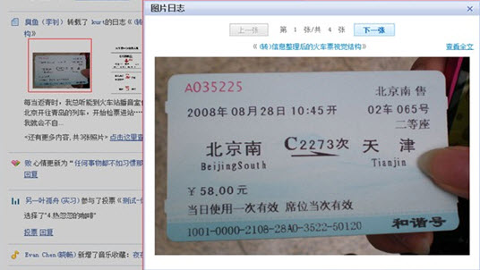
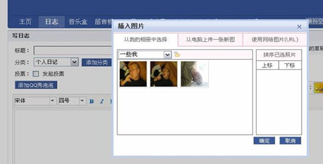
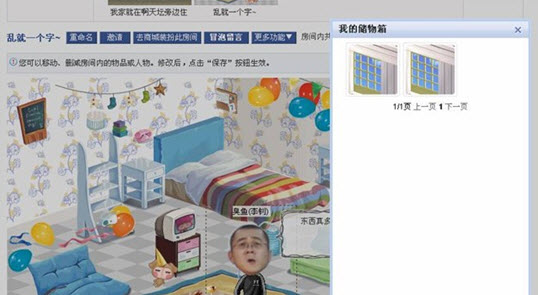
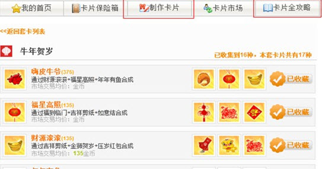
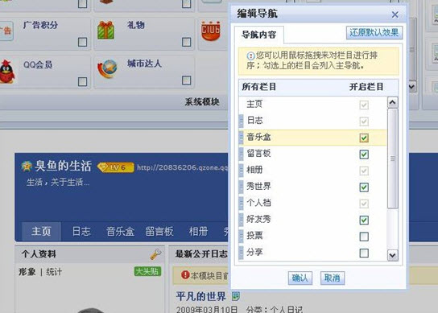

弹出窗口与切换页面的对比总结
http://isd.tencent.com/?p=2116
分享较早前的一个小总结，关于在选择弹出窗口还是选择切换页面来承载信息时，可用用来判断的几个角度，合适初学者来读。
1.弹出窗口与切换页面的区别
1） 操作的连贯性 弹出窗口的速度会比打开一个页面的速度要快，响应更及时一些，点击后可以比较快的得到操作的反馈，而切换页面则经常会让用户等待一段时间。
实例一：个人中心中，查看好友照片的操作：

http://hiphotos.baidu.com/hxzon/pic/item/59f2d709854835c3d0581be6.jpg
之前查看照片的操作页面会跳转到该好友的空间“相册”页面，而现在则更改进为弹出窗口，能够很快看到照片的放大图，关掉窗口后，又可以继续浏览其他好友的信息了。
2）操作的延续性 弹出窗口可以保留原页面上的内容，不至于页面被刷新掉；切换页面很有可能刷新，在以下两种情况下是尤其要避免的：用户在原界面上有输入的内容，用户需要根据原有界面的内容，来选择或判断新界面的内容。在这两种情况下最好首选弹出窗口。
实例一：Qzone写日志中插入图片：

http://hiphotos.baidu.com/hxzon/pic/item/78749a82e9ce65fe6d8119e6.jpg
用户在写日志的时候插入一张照片，如果这时候插入照片的界面是切换一个页面，用户可能就会担心之前的输入是否还在，而弹出窗口则可以在保留原页面已编辑的文字，在此之上出现一个小型的界面，显示可以插入的照片。
实例二，秀世界中我的储物箱，用户需要看到房间中的效果，来决定从“我的储物箱”中选择哪个物品放入房间里，用弹出窗口可以比较方便的解决这个问题:

http://hiphotos.baidu.com/hxzon/pic/item/a72b860a254e157fb0351de6.jpg
实例三：一个相反的例子，欢乐卡片的应用，制从“我的首页”页面当中，制作卡片的时候需要哪些卡面是在“卡片全攻略”页面来说明的，因此用户在制作卡片的时候需要不断切换到“卡片全攻略”页面来查看需要合成的卡片，因此，在这样的情形下，采用弹出窗口的形式来表现卡片合成向导应该更合适一些。

http://hiphotos.baidu.com/hxzon/pic/item/d272ba3e8fa39abb838b13e6.jpg
3） 操作的自然过度 弹出窗口不容易让人迷路，知道自己身处何处；而页面切换了以后用户有时候会产生一下子不知道在哪里的迷惑；弹出窗口页面的内容往往只和当前的操作有关，而且是浮在原有页面上的，用户可以很自然的延续上一操作的结果而继续操作或是浏览下去，而切换的新页面中往往会包含新内容之外的信息： banner、导航、一些固定的栏目等等，用户不能立刻定位到自己想要关注的内容上，因此切换页面的设计应更加关注一致性和承前启后的关联性。
实例一：网吧达人的首页页面1中点击“常去的网吧”，进入页面2，因为两个页面的结构有所不同，很容易让用户觉得不知身处何处。
页面1：
http://hiphotos.baidu.com/hxzon/pic/item/7a9f35fac21d0f5fa9d311e6.jpg
页面2：
http://hiphotos.baidu.com/hxzon/pic/item/eeb593ca985e0ec7c81768e6.jpg
4） 承载的信息量 弹出窗口可承载的信息量有限，操作流程不宜过多。
5） 内容的推广 弹出窗口没有独立的连接地址，在页面推广上有所限制。
实例一：在做信用卡频道的活动列表时，最初的设计是点击活动信息的标题后，用弹出窗口来展示活动详情，然而因为活动页面需要在推广时有独立的地址便于用户能够从其他途径直接访问到活动详情页，因此改为采用切换页面的方式。
http://hiphotos.baidu.com/hxzon/pic/item/4921a01eea45545e403417e6.jpg
2. 弹出窗口与页面内展开的区别？
1）页面内展开能够即时的反馈用户的操作；容易给用户带来自然过度的体验；适合于对主要内容的扩充，更详细的、更近一步的内容，当用户没有看到这些内容并不会影响使用，而打开这些内容，用户可以看到更多、或是得到更丰富的功能。
实例一：个人中心的展开操作，通过页面内展开的形式显示评论信息，它并不是该好友动态的主要内容，因此作为附加信息收在了“详情”当中。
http://hiphotos.baidu.com/hxzon/pic/item/6379fb1f05a23e4b314e15e6.jpg
2）弹出窗口是用户点击按钮后，在页面上浮出一个层来显示进一步的内容，与页面内展开的形式不同的是，弹出层更适用于区域内的内容较为重要的时候使用，比如弹出层内包含一些操作、或重要提示。
实例二：编辑导航的界面中更改选择，下面的预览界面中会直接看到效果。

http://hiphotos.baidu.com/hxzon/pic/item/8a9e910a76d88c5e94ca6be6.jpg
实例三：二次确认的提示应当采用弹出窗口：

http://hiphotos.baidu.com/hxzon/pic/item/fbe4231fdd5c7889a68669e6.jpg